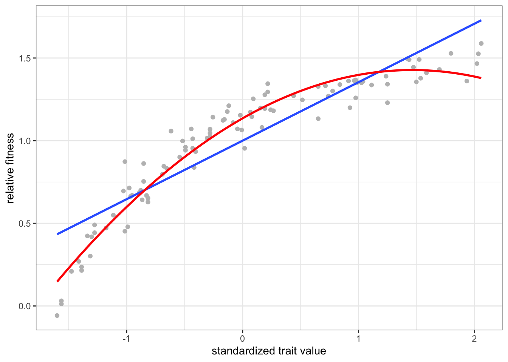
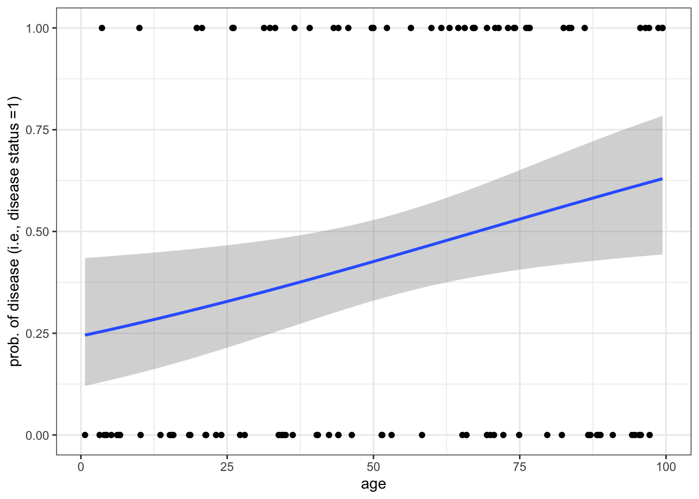

library(tidyverse)
library(car)
surveys_subset <- read_csv("survey_subset.csv")
theme_set(theme_bw())9 Linear models
9.1 Lesson preamble:
9.1.1 Lesson objectives
- Understand the logic of simple and multiple linear regression, including the assumptions that are placed on the data, parameters, and errors.
- Understand the meaning of regression coefficients and how they are estimated.
- Learn how confidence intervals and \(p\)-values associated to the regression coefficients are calculated and used to test hypotheses.
- Understand how to implement linear models (including ANOVA) in R.
- Develop familiarity with generalized linear models and some important examples (logistic, Poisson, negative binomial regression).
9.1.2 Lesson outline
- Linear models: theory and examples
- Structure and assumptions, including interpretation of the effects
- Likelihood-based estimation and inference
- Transformations
- Dummy variables, interactions between covariates, etc.
- Analysis of Variance
- Generalized linear models
- Non-normal errors, link functions
- Estimation and inference: even more likelihood!
- Logistic regression
- Poisson, negative binomial regression
9.2 Linear models: why we care
Linear models are at the heart of statistical practice in the physical, life, and social sciences! Linear regression actually refers to a family of modeling approaches that attempt to learn how the mean and/or variance of a response variable \(\boldsymbol{y} = (y_1,\dots,y_n)\) depend on (linear) combinations of variables \(\boldsymbol{x}_i = (x_{i1},\dots,x_{in})\) called predictors. In this lecture, we will discuss various forms of the linear model and assumptions placed on the data to make estimation and inference of the relationships between variables tractable. We will see how the likelihood function forms the basis for this estimation/inference, and how extensions of multiple regression (generalized linear models and mixed models!) can be understood in a likelihood framework. Our goal will be to become familiar with how these models work and how they are fit to data in R.
9.3 Theory: likelihood estimation and inference for linear models
A linear model takes the form
\[ y_i = \beta_0 + \beta_1 x_{1i} + \cdots + \beta_p x_{pi} + \varepsilon_{i}, \]
where \(i=1,\dots,n\) correspond to observations of a random variable \(Y\) which we call the response. The goal of regression is to explain and to predict the behavior of the response variable by adding together effects of \(p\) covariates \(x_1,\dots,x_p\), which are also called predictors. Importantly, the phrase “linear model” is somewhat deceptive in that the model can be used to describe many kinds of functional relationships in the data: for example, we could use \(x_2 = x_1^2\) to model higher order effects of \(x_1\) on the response. In general, the linear model above specifies how the realizations \(y_1,\dots,y_n\) of a random variable \(Y\) depend on the additive effects of one or more non-random covariates/predictors. We will discuss random and mixed effects next class, but the machinery used to estimate the effect sizes \(\beta_1,\dots,\beta_p\) and error variance are very similar to the model in which the \(x\)s are assumed to be fixed.
To make estimation and inference tractable, the errors \(\varepsilon_i\) are assumed to be Normal with mean zero and variance \(\sigma_i^2\). Equivalently, we could assume the data \(y_1,\dots,y_n\) are 1) independent and 2) Normal with mean(s) \(\beta_0 + \beta_1 x_{1i} + \cdots + \beta_p x_{pi}\) and variance(s) \(\sigma_1^2,\dots,\sigma_n^2\). Although the normality assumption is not strictly necessary (nor is the assumption of equal variance across observations), they are commonly made and allow us to easily estimate the effect sizes and error variance. Under the assumption of normality and constant error variance \(\sigma_1^2 = \dots = \sigma_n^2 = \sigma^2\), the likelihood can be written as
\[ L(\beta_0,\beta_1,\dots,\beta_p,\sigma^2) = \prod_{i=1}^n (2 \pi \sigma^2)^{-1/2} e^{-(y_i - \beta_0 - \beta_1 x_{1i} - \dots - \beta_p x_{pi})^2/2\sigma^2}. \]
Estimators of the regression coefficients \(\beta_1,\dots,\beta_p\) and \(\sigma^2\) are found by maximizing the likelihood. In fact, the estimators found by maximum likelihood methods are exactly those which minimize the distance from the model \(y = \beta_0 + \beta_1 x_{1} + \dots + \beta_p x_{p}\) from the data. The line (and in higher dimensions, plane) given by this equation is such that the the sum of squared departures of the line from the data is as small is it can be. Other notions of distance turn out to give rise to interesting extensions of the linear model, such as ridge and LASSO regression, which are beyond the scope of the course.
9.3.1 Simple linear regression: \(p=1\)
Simple linear regression is a special case of the general linear model (above), and corresponds to the case there is only one predictor, i.e., \(p=1\).
9.3.2 The matrix vesion of the general linear model
What is often used in theory and practice is a matrix version of the above model:
\[ \boldsymbol{y} = \begin{bmatrix} y_{1} \\ y_{2} \\ \vdots \\ y_{n} \end{bmatrix} = \begin{bmatrix} 1 & x_{11} & x_{21} & \cdots & x_{p1} \\ 1 & x_{12} & x_{22} & \cdots & x_{p2} \\ \vdots & \vdots & \vdots & & \vdots \\ 1 & x_{1n} & x_{2n} & \cdots & x_{pn} \end{bmatrix} \begin{bmatrix} \beta_{1} \\ \beta_{2} \\ \vdots \\ \beta_{p} \end{bmatrix} + \begin{bmatrix} \varepsilon_{1} \\ \varepsilon_{2} \\ \vdots \\ \varepsilon_{n} \end{bmatrix} = \boldsymbol{X} \boldsymbol{\beta} + \boldsymbol{\varepsilon}. \]
Here, \(\boldsymbol{y} = (y_1,\dots,y_n)'\) is a vector of measurements for the response, \(\boldsymbol{x_i} = (x_{i1},\dots,x_{in})'\) is a vector of measurements for the \(k\)th predictor, and \(\boldsymbol{\varepsilon} = (\varepsilon_1,\dots,\varepsilon_n)'\) is a vector of measurement errors. The \('\) symbol corresponds to transposition, which involves interchanging the rows and columns of a vector or matrix.1
When all the errors are modeled as above (i.e., as Normal with constant variance and mean zero), the ML estimator for the vector of regression coefficients is \(\boldsymbol{\hat{\beta}_{\text{MLE}}} = (\boldsymbol{X'X})^{-1} \boldsymbol{X'} \boldsymbol{y}\).
9.3.2.1 What do the regression coefficients mean?
The interpretation of the regression coefficients is as follows: \(\beta_j\) describes how much the response is expected to change, all else constant, if we increase \(x_j\) by exactly one unit. Importantly, the fitted regression coefficients measure the effect (slope) of increasing \(x_1,\dots,x_j\) on the response under the assumption of normal data — this distinction between the theoretical and fitted coefficients is important to keep mind.
9.3.2.2 Categorical predictors
Before we dive into implementing linear models in R, it is important to mention how the linear model accommodates discrete predictors like sex (or genotype, ID, race). To deal with categorical predictors, we define the model in terms of a baseline and to interpret the regression coefficients relative to this baseline. This involves coding “dummy variables” \(x_1,\dots,x_{k-1}\) for all but one the values (\(1,2,\dots,k\)) the predictor can take one, so that \(x_{ji} = 1\) for observations where the categorical variable is \(=j\) and \(=0\) otherwise.
9.4 Practice: fitting linear models with lm
To illustrate how regression models are fitted (via maximum likelihood) in R, we will use the survey dataset from a couple classes ago. We begin by regressing weight on hindfoot length:
model <- lm(weight ~ hindfoot_length, data=surveys_subset)
summary(model) # assuming normality, homogeneity of variance
Call:
lm(formula = weight ~ hindfoot_length, data = surveys_subset)
Residuals:
Min 1Q Median 3Q Max
-60.342 -13.126 -4.018 3.351 221.135
Coefficients:
Estimate Std. Error t value Pr(>|t|)
(Intercept) -33.2179 1.3575 -24.47 <2e-16 ***
hindfoot_length 2.5651 0.0441 58.16 <2e-16 ***
---
Signif. codes: 0 '***' 0.001 '**' 0.01 '*' 0.05 '.' 0.1 ' ' 1
Residual standard error: 26.19 on 3842 degrees of freedom
(505 observations deleted due to missingness)
Multiple R-squared: 0.4682, Adjusted R-squared: 0.4681
F-statistic: 3383 on 1 and 3842 DF, p-value: < 2.2e-16R returns the following after fitting a linear model via lm():
- Descriptive statistics for the “residuals” \(\varepsilon_i = y_i - \widehat{\beta_0} - \widehat{\beta_1} x_i\), which tell us about how much variability there is in the data relative to the linear model specified and fitted.
- The regression coefficients minimizing the sum of squared departures from the data (i.e., the ML estimates) and \(95\%\) confidence intervals for each. The CIs are expressed as standard errors, since the estimators have an approximate Normal distribution. A joint confidence region for the coefficients can also be found using, e.g., the LRT statistic.
- A suite of test statistics! The \(t\) statistics and their \(p\) values are associated to the test \(H_0: \beta_i = 0\) vs \(H_1: \beta_i \neq 0\). Significance codes specify the level \(\alpha\) at which we have evidence to reject the null hypothesis for each coefficient.
- Measures of goodness-of-fit: the multiple \(R^2\) and the adjusted \(R^2\). These explain the proportion of variance that are explained by the model. The latter measures the proportion of variance explained by the linear model upon adjusting for sample size and \(\#\) of predictors.
ggplot(surveys_subset, aes(x = hindfoot_length, y = weight)) +
geom_point(aes(color = as.factor(sex)), size = 2) +
stat_smooth(method = "lm", se = F, color = "gray") + labs(color = "sex")`geom_smooth()` using formula = 'y ~ x'Warning: Removed 505 rows containing non-finite values (`stat_smooth()`).Warning: Removed 505 rows containing missing values (`geom_point()`).
### are the data normal?
ggplot(surveys_subset, aes(x = weight)) + geom_histogram() ## oh no!`stat_bin()` using `bins = 30`. Pick better value with `binwidth`.Warning: Removed 316 rows containing non-finite values (`stat_bin()`).
9.4.1 Transformations
Often, data are non-normal! This is an unfortunate fact of life. It is sometimes possible, however, to use the machinery of regression if there is a suitable transformation of the data which makes it normal, e.g., log(), sqrt(). Right-skewed data (like above) may be normalized using log or root transformations (e.g. square root, third-root, etc.), with greater roots required for increasingly right-skewed data. Left-skewed data could be normalized with power transformations (e.g. squared, 3rd power, etc.).
ggplot(surveys_subset, aes(x = log(weight))) + geom_histogram() ## better!`stat_bin()` using `bins = 30`. Pick better value with `binwidth`.Warning: Removed 316 rows containing non-finite values (`stat_bin()`).
model_logtrasnformed <- lm(log(weight)~hindfoot_length, data=surveys_subset)
summary(model_logtrasnformed)
Call:
lm(formula = log(weight) ~ hindfoot_length, data = surveys_subset)
Residuals:
Min 1Q Median 3Q Max
-1.8285 -0.2135 -0.0473 0.1488 1.9612
Coefficients:
Estimate Std. Error t value Pr(>|t|)
(Intercept) 1.5655038 0.0203235 77.03 <2e-16 ***
hindfoot_length 0.0647424 0.0006603 98.06 <2e-16 ***
---
Signif. codes: 0 '***' 0.001 '**' 0.01 '*' 0.05 '.' 0.1 ' ' 1
Residual standard error: 0.3922 on 3842 degrees of freedom
(505 observations deleted due to missingness)
Multiple R-squared: 0.7145, Adjusted R-squared: 0.7144
F-statistic: 9615 on 1 and 3842 DF, p-value: < 2.2e-16As before, there is evidence to reject the null hypothesis that hindfoot length has no effect on weight (or, in this case, its log transformation) at significance level \(\alpha = 0.05\). This is because the \(p\)-value that is associated to the coefficent of hindfoot length is \(< \alpha\). We can also use what is returned by lm() to predict what the response will be if we observe new data (hindfoot lengths).
new_hindfoot_length_obs <- data.frame(hindfoot_length = seq(0,100,0.1))
predicted_values <- predict.lm(object = model_logtrasnformed,
newdata = new_hindfoot_length_obs)
ggplot(cbind(logweight = predicted_values, new_hindfoot_length_obs),
aes(x = hindfoot_length, y = logweight)) + geom_line(size = 1, color = "gray") +
geom_point(data = surveys_subset, inherit.aes = F, size = 2,
aes(x = hindfoot_length, y = log(weight), color = as.factor(sex))) +
labs(color = "sex", y = "log(weight)")Warning: Using `size` aesthetic for lines was deprecated in ggplot2 3.4.0.
ℹ Please use `linewidth` instead.Warning: Removed 505 rows containing missing values (`geom_point()`).9.4.1.1 Challenge
Regress weight on sex. Be sure to specify that sex is a factor in the call to lm(). What value of sex is used as a baseline? Is there a significant effect of sex on weight?
model <- lm(weight~as.factor(sex), data=surveys_subset)
summary(model)
Call:
lm(formula = weight ~ as.factor(sex), data = surveys_subset)
Residuals:
Min 1Q Median 3Q Max
-38.14 -22.14 -6.99 5.01 227.86
Coefficients:
Estimate Std. Error t value Pr(>|t|)
(Intercept) 42.9896 0.8403 51.160 <2e-16 ***
as.factor(sex)M -0.8537 1.1651 -0.733 0.464
---
Signif. codes: 0 '***' 0.001 '**' 0.01 '*' 0.05 '.' 0.1 ' ' 1
Residual standard error: 36.89 on 4014 degrees of freedom
(333 observations deleted due to missingness)
Multiple R-squared: 0.0001337, Adjusted R-squared: -0.0001154
F-statistic: 0.5368 on 1 and 4014 DF, p-value: 0.46389.4.2 Syntax for multiple regression, interactions
One can regress on several explanatory variables simultaneously as follows:
model <- lm(weight~hindfoot_length+as.factor(sex), data=surveys_subset)
summary(model, type = 3)
Call:
lm(formula = weight ~ hindfoot_length + as.factor(sex), data = surveys_subset)
Residuals:
Min 1Q Median 3Q Max
-58.736 -12.860 -3.985 3.519 222.859
Coefficients:
Estimate Std. Error t value Pr(>|t|)
(Intercept) -31.55118 1.41051 -22.369 < 2e-16 ***
hindfoot_length 2.57297 0.04414 58.287 < 2e-16 ***
as.factor(sex)M -3.64249 0.84599 -4.306 1.71e-05 ***
---
Signif. codes: 0 '***' 0.001 '**' 0.01 '*' 0.05 '.' 0.1 ' ' 1
Residual standard error: 26.15 on 3832 degrees of freedom
(514 observations deleted due to missingness)
Multiple R-squared: 0.4702, Adjusted R-squared: 0.4699
F-statistic: 1700 on 2 and 3832 DF, p-value: < 2.2e-16Interactions between covariates are modeled by introducing additional covariates of the form \(x_i x_j\). An interaction occurs when an independent variable has a different effect on the outcome depending on the values of another independent variable. They are super important! To estimate the coefficients associated to an interaction, * is used in the call to lm:
model <- lm(weight~hindfoot_length*as.factor(sex), data=surveys_subset)We interpret the coefficient of the interaction term as we do all other regression coefficients. Per unit change in \(x_i x_j\) (here, the interaction between hindfoot length and sex), the associated regression coefficient measures the change in the response (weight).
surveys_subset %>% subset(! is.na(sex)) %>%
ggplot(aes(x = hindfoot_length, y = weight, color = as.factor(sex))) + geom_point() +
geom_smooth(method = "lm", se = F)`geom_smooth()` using formula = 'y ~ x'Warning: Removed 285 rows containing non-finite values (`stat_smooth()`).Warning: Removed 285 rows containing missing values (`geom_point()`).
9.4.2.1 Challenge
Is there a significant interaction between hindfoot length and sex on weight?
9.4.3 The relationship between linear models and ANOVA
Analysis of Variance (ANOVA) is a statistical technique that is used to analyze variation in observations within and between categories, and to test if two or more population means are equal. Importantly, ANOVA is mathematically equivalent to regression with covariates that are all categorical. This means the assumptions of linear regression apply when preforming an ANOVA.
ANOVA can be implemented in R as follows:
model <- lm(weight~as.factor(sex), data=surveys_subset)
anova(model) # must wrap the anova() around a lm()/modelAnalysis of Variance Table
Response: weight
Df Sum Sq Mean Sq F value Pr(>F)
as.factor(sex) 1 730 730.48 0.5368 0.4638
Residuals 4014 5461759 1360.68 Briefly, ANOVA tests differences between means by decomposing the total sum of squares (variance in the observations) into the variance due to the level under investigation (e.g., sex) and its factors (M, F). The \(F\)-statistic for each level (excluding the residuals) is the mean square, divided by the residual mean square, and should be \(\sim 1\) if the corresponding effects are \(=0\). We reject the null hypothesis (there is no differences in group means) for values of \(F\) that are inconsistent with its distribution under the null hypothesis; recall from last time that the \(p\)-value measures the probability of observing data more extreme than the calculated value of \(F\) from the data, under the null hypothesis (i.e., the factors at some level have no effect). If \(p < \alpha\), we reject the null hypothesis at significance level \(\alpha\).
9.4.3.1 ANOVA with two or more covariates
model <- lm(weight~hindfoot_length*as.factor(sex), data=surveys_subset)
# wrap Anova(), not summary()
Anova(model, type = 3)Anova Table (Type III tests)
Response: weight
Sum Sq Df F value Pr(>F)
(Intercept) 203901 1 298.3134 < 2e-16 ***
hindfoot_length 1151284 1 1684.3645 < 2e-16 ***
as.factor(sex) 48 1 0.0709 0.79010
hindfoot_length:as.factor(sex) 1951 1 2.8544 0.09121 .
Residuals 2618537 3831
---
Signif. codes: 0 '***' 0.001 '**' 0.01 '*' 0.05 '.' 0.1 ' ' 1# compare p-values with summary(), which are slightly different
anova(model)Analysis of Variance Table
Response: weight
Df Sum Sq Mean Sq F value Pr(>F)
hindfoot_length 1 2312681 2312681 3383.5236 < 2.2e-16 ***
as.factor(sex) 1 12677 12677 18.5473 1.699e-05 ***
hindfoot_length:as.factor(sex) 1 1951 1951 2.8544 0.09121 .
Residuals 3831 2618537 684
---
Signif. codes: 0 '***' 0.001 '**' 0.01 '*' 0.05 '.' 0.1 ' ' 1Instead of wrapping summary() around our linear model object, we use the Anova() function from the cars package to test the significance of our predictors. A Type 1 ANOVA (sequential sum of squares) will test the main effect of variable A, followed by the main effect of variable B after the main effect of A, followed by the interaction effect of AB. Since it tests factor A without controlling for factor B, the order that you specify your independent variables will matter! A Type 2 ANOVA (hierarchical sum of squares) tests for the main effect of variable A and variable B, but it does not assume that there is an interaction. If you have a factorial design, you should not be using a Type 2 ANOVA. Finally, a Type 3 ANOVA (marginal sum of squares) tests for the presence of a main effect while controlling for the other main effect and interaction; that is, it tests the effect of variable A if all other variables are already considered. This approach is therefore valid in the presence of significant interactions.
The type of ANOVA you use will matter when you have more than one independent variable, and especially if you have unbalanced data. By default, R uses type II sums of squares. Above, we are use Type 3 sums of squares as we care about the interaction between hindfoot length and sex, and we don’t prioritize the effects of one variable.
9.4.4 A fun application!
In quantitative genetics, regression is used to estimate the strength of directional, stabilizing, or disruptive selection on continuous traits (e.g., beak length) controlled by a large number of genes of small additive effect. Without getting into the weeds, the regression of relative fitness (or some proxy for fitness) on trait value provides an estimate of the selection differential \(S\), defined as the co-variance between fitness and the trait. The observation linear models could be used to estimate selection on on or more quantitative traits (possibly correlated) was operationalized in 1983 by Lande & Arnold. When trait measurements are normalized, the slope of the regression equals the strength of directional selection on the trait. Regression has been applied in a wide range of plant and animal taxa to estimate selection and, when there are multiple traits under investigation, the relative importance of direct vs indirect selection on evolution.
generate_data_directionalselection <- function(n = 100, values){
trait_data <- sort(sample(size = n, x = values, replace = T))
fitness_data <- 1 - dexp(trait_data, rate = 1) + rnorm(n, mean = 0, sd = 0.05)
return(
data.frame(
trait = trait_data, fitness = fitness_data/mean(fitness_data)
)
)
}
data <- generate_data_directionalselection(values = seq(0,3,0.01))
model1 <- lm(fitness~scale(trait), data)
# scale function transforms trait data so that mean=0, variance=1
summary(model1)
Call:
lm(formula = fitness ~ scale(trait), data = data)
Residuals:
Min 1Q Median 3Q Max
-0.36874 -0.11840 0.03626 0.13023 0.30442
Coefficients:
Estimate Std. Error t value Pr(>|t|)
(Intercept) 1.00000 0.01590 62.90 <2e-16 ***
scale(trait) 0.37040 0.01598 23.18 <2e-16 ***
---
Signif. codes: 0 '***' 0.001 '**' 0.01 '*' 0.05 '.' 0.1 ' ' 1
Residual standard error: 0.159 on 98 degrees of freedom
Multiple R-squared: 0.8457, Adjusted R-squared: 0.8442
F-statistic: 537.3 on 1 and 98 DF, p-value: < 2.2e-16### fitness changed by ~50% per sd change in trait value!
ggplot(data, aes(x = scale(trait), y = fitness)) +
geom_point(color = "gray") +
geom_smooth(method = "lm", formula = y ~ x, se = F) +
geom_smooth(method = "lm", formula = y ~ x + I(x^2), se = F,
color = "red") +
labs(x = "standardized trait value", y = "relative fitness")
model2 <- lm(fitness~scale(trait)+scale(trait^2), data)
summary(model2)
Call:
lm(formula = fitness ~ scale(trait) + scale(trait^2), data = data)
Residuals:
Min 1Q Median 3Q Max
-0.157196 -0.059319 0.000927 0.042577 0.199743
Coefficients:
Estimate Std. Error t value Pr(>|t|)
(Intercept) 1.000000 0.007575 132.02 <2e-16 ***
scale(trait) 0.885050 0.029141 30.37 <2e-16 ***
scale(trait^2) -0.533167 0.029141 -18.30 <2e-16 ***
---
Signif. codes: 0 '***' 0.001 '**' 0.01 '*' 0.05 '.' 0.1 ' ' 1
Residual standard error: 0.07575 on 97 degrees of freedom
Multiple R-squared: 0.9653, Adjusted R-squared: 0.9646
F-statistic: 1351 on 2 and 97 DF, p-value: < 2.2e-16Here, the blue (red) regression line is the linear (quadratic) individual selection surface, estimated by regressing fitness on trait value (and its square) simulated under a model of directional selection.
9.4.4.1 Other applications…
Regression has also been used in quantitative genetics to estimate the hertiability of traits (i.e., the proportion of variance in the trait that is explained by the additive action of genes), and to preform Genome-Wide Association Studies (GWAS) and uncover the genetic basis of complex traits. One form of GWAS involves regressing phenotype (e.g., disease status) on the existence/non-existence of genetic differences (most often, SNPs) among individuals sampled, and identifying those which have a significant effect on phenotype.
9.5 Generalized linear models: theory and examples
So far we have seen how regression can be used to fit linear models when the distribution of the data is approximately normal or when the data can be transformed so that this assumption is not violated. What if we were, say, interested in a binary response (e.g., disease status) and how it changes with a continuous predictor (e.g., age)? In this case, one can use a special kind of linear model called logistic regression to estimate the additive effect of predictor(s) on the binary response. Generalized linear models (GLMs) are useful when the response has a non-normal distribution, and transformation of the data is undesirable or impossible. A GLM takes the form
\[E(\boldsymbol{y}|\boldsymbol{X}) = g^{-1}(\boldsymbol{X} \boldsymbol{\beta}),\]
where \(g(\cdot)\) is a smooth and invertible link function taking the conditional expectation on the LHS to the linear predictor on the RHS. The link function for distributions in the overdispersed exponential family (including the Normal, Gamma, Exponential, Poisson, and Multinomial) are known. GLMs with these data distributions can be implemented in R by calling glm() with the appropriate family specified:
result_binary <- glm(as.factor(sex)~weight,
family=binomial,
data=surveys_subset)
summary(result_binary)
Call:
glm(formula = as.factor(sex) ~ weight, family = binomial, data = surveys_subset)
Deviance Residuals:
Min 1Q Median 3Q Max
-1.222 -1.214 1.134 1.143 1.204
Coefficients:
Estimate Std. Error z value Pr(>|z|)
(Intercept) 0.1074131 0.0482240 2.227 0.0259 *
weight -0.0006272 0.0008560 -0.733 0.4638
---
Signif. codes: 0 '***' 0.001 '**' 0.01 '*' 0.05 '.' 0.1 ' ' 1
(Dispersion parameter for binomial family taken to be 1)
Null deviance: 5560.8 on 4015 degrees of freedom
Residual deviance: 5560.3 on 4014 degrees of freedom
(333 observations deleted due to missingness)
AIC: 5564.3
Number of Fisher Scoring iterations: 3Above are estimates of coefficients of a regression of sex on weight, as well as some details about the procedure used to fit those parameters. All GLMs are fitted via maximum likelihood, using using numerical optimization methods like iteratively reweighted least squares.
Using the cannonical link function, logistic regression can be formulated as follows:
\[ \text{logit}(p) = \log\frac{p}{1-p} = \boldsymbol{X} \boldsymbol{\beta} \iff p = e^{\boldsymbol{X} \boldsymbol{\beta}} = e^{\beta_0 + \beta_1 x_1 + \dots + \beta_p x_p}. \]
\(\text{logit}(p)\) is called the log-odds, which can be thought of as a likelihood the response takes on the value one. Under logistic regression, the log-odds ratio is modeled as a linear combination in the predictors \((= \boldsymbol{X} \boldsymbol{\beta})\). Since the regression coefficients appear only through the logit-transformed proportions, their interpretation is somewhat different under logistic regression and other GLMs. Importantly, changing \(x_j\) by one unit, all else constant, results in change \(\beta_j\) to the link-transformed response. This is how the effect sizes are interpreted for GLMs like the one fitted above.
surveys_subset %>% filter(! is.na(sex)) %>%
mutate(ID = ifelse(sex == "M", 0, 1)) %>%
ggplot(aes(x = weight, y = ID)) + geom_point() +
geom_smooth(method = "glm",
method.args = list(family = "binomial"),
se = T
)`geom_smooth()` using formula = 'y ~ x'Warning: Removed 104 rows containing non-finite values (`stat_smooth()`).Warning: Removed 104 rows containing missing values (`geom_point()`).
Here are some common types of response variables and their corresponding distributions:
- Count data (positive integers only): Poisson distribution
- Over-dispersed count data (when the count data is more spread out than “expected”): negative binomial distribution
- Binary data (two discrete categories): binomial distribution
9.5.1 Returning to the disease-age example…
Below we simulate binary disease data (0,1) for patients of several ages, assuming the the log-odds of disease is a linear function of age. We then fit a logistic regression to this data to determine the effect of age on disease risk. Next, we write a function to do a power analysis. That is, we determine the sample size that is required so that simulating the age-disease data repeatedly we identify a significant effect of age on disease status (i.e., reject the null hypothesis) at level \(\alpha = 0.01\) at least \(99\%\) of the time.
data_generator <- function(sample_size = 100){
age <- sample(size = sample_size, x = seq(0,100,0.1), replace = T)
linear_predictor <- 0.8*scale(age)
prob <- 1/(1+exp(-linear_predictor))
disease_status <- c()
for (i in 1:length(prob)){
disease_status[i] <- rbinom(n = 1, size = 1, prob = prob[i])
}
return(data.frame(age = age, disease_status = disease_status))
}
data <- data_generator()
data %>% pivot_longer(! age) %>%
ggplot(aes(x = age, y = value)) + geom_point() +
geom_smooth(method = "glm", method.args = list(family = "binomial")
) + labs(y = "prob. of disease (i.e., disease status =1)")`geom_smooth()` using formula = 'y ~ x'
model <- glm(disease_status~scale(age), family = binomial, data = data)
summary(model)
Call:
glm(formula = disease_status ~ scale(age), family = binomial,
data = data)
Deviance Residuals:
Min 1Q Median 3Q Max
-1.6236 -1.0219 -0.7782 1.0535 1.6736
Coefficients:
Estimate Std. Error z value Pr(>|z|)
(Intercept) -0.08469 0.21035 -0.403 0.68722
scale(age) 0.65288 0.21870 2.985 0.00283 **
---
Signif. codes: 0 '***' 0.001 '**' 0.01 '*' 0.05 '.' 0.1 ' ' 1
(Dispersion parameter for binomial family taken to be 1)
Null deviance: 138.47 on 99 degrees of freedom
Residual deviance: 128.78 on 98 degrees of freedom
AIC: 132.78
Number of Fisher Scoring iterations: 4power_analysis_function <- function(sample_size){
sims <- 1000
pvalues <- c()
for (i in 1:sims){
data <- data_generator(sample_size)
model <- glm(disease_status~scale(age), family = binomial, data = data)
pvalues[i] <- summary(model)$coefficients[2,4]
}
power_estimate <- length(which(pvalues < 0.01))/length(pvalues)
return(power_estimate)
}
sample_sizes <- seq(100,200,10); power_estimates <- c()
for (i in 1:length(sample_sizes)){
power_estimates[i] <- power_analysis_function(sample_size = sample_sizes[i])
}
knitr::kable(cbind(n = sample_sizes, power = power_estimates))| n | power |
|---|---|
| 100 | 0.895 |
| 110 | 0.933 |
| 120 | 0.938 |
| 130 | 0.956 |
| 140 | 0.971 |
| 150 | 0.989 |
| 160 | 0.986 |
| 170 | 0.991 |
| 180 | 0.997 |
| 190 | 1.000 |
| 200 | 0.997 |
In R, the function
t()can be used to transpose a vector or matrix.↩︎